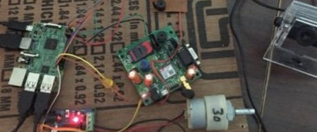
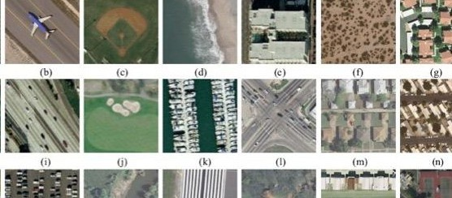

.png)
I'm a Research Fellow in computer vision and deep learning at the Center for Visual Information Technology (CVIT), IIIT Hyderabad. I have been working in autonomous driving domain using computer vision and deep learning for a span of two years under the guidance of excellent team of advisors, Prof. C V Jawahar, Prof. Vineeth N Balasubramanian, Prof. Chetan Arora and Dr. Anbumani Subramanian. It has been a really great learning experience to grow in this field, that I am extremely passionate about. I worked on various amazing projects in this span of time. One of which has been published at WACV 2022 conference and other is under review at ECCV. One of our works is also under patenting process. I have also have been a reviewer at WACV conference. Overall it has really been a wonderful experience. Previously I had been working in IT sector at Barclays Inc., where I had good exposure to develop end-to-end systems and understand how things work at corporate level. It was a drastic career change (from Barclays to CVIT, IIITH), that I worked hard for; to pursue my passion as my profession and grow further in that path. I completed my Bachelors in Computer Science and Engineering in 2018 from Savitribai Phule Pune University (SPPU), India where I was advised by Dr. Sudeep Thepade .
Research Interests: Back during my undergraduate course in Computer Science, I used to wonder, "What really would be the next revolution in this field?" Back then enjoying my programming courses and being dramatically fascinated by technologies like Jarvis, Siri I thought, Mind Reading Computers would just be the next remarkable revolution. Curiosity about developing Mind-Reading Computers drove me towards emerging world-changing technologies in the field of Artificial Intelligence. I am fascinated by research works in object-Object interactions or Object-Scene interactions and their relationship / intent understanding. My current research work lies in the intersection of vision and language, using explainable AI for problems like pedestrian intent prediction and further exploring visual and abductive reasoning for the same. Some of my previous research works include interesting domains like unsupervised domain adaptation, spatio-temporal reasoning using graph neural networks, generative adversarial networks to name a few.
Volunteering: I belive in giving back to the society what we are fortunate enough to have gained. I am selected to be a Portfolio Project Mentor for the Changemakers in AI program at AI4ALL. Excited to spend my summer mentoring the students at a platform like AI4ALL, it's a two-way learning process I believe. Previously I had also organised Organised HOUR OF CODE as an initiative for International Coding Week, to teach school students Coding and Algorithmic Concepts by innovative and simple games.
My non-professional interests include watching Sci-Fi movies, Favourite being Iron Man. Reading a lot about new tech stuffs as well as trending articles and implementations related to my field of interest on Google and Twitter. I’m always up for interesting collaborations or just random chats on AI, feel free to drop me a message on Linkedin or via email.


Research
|
|
Why did the chicken cross the road?Under Review Understanding pedestrians’ intention is crucial for safe navigation to avoid risks or uncertainties. We explore the complex problem of intent prediction with intuitive and reasonable understanding of socio-environmental interactions.
|
|
|
To miss-attend is to misalign! Residual Self-Attentive Feature Alignment for Adapting Object DetectorsIEEE Winter Conference on Applications of Computer Vision, WACV 2022 Paper / Talk / Code / Poster / Supplementary adaptive object detection remains challenging due to visual diversity in background scenes and intricate combinations of objects. Motivated by structural importance, we aim to attend prominent instance-specific regions, overcoming the feature misalignment issue. We propose a novel resIduaL seLf-attentive featUre alignMEnt ( ILLUME ) method for adaptive object detection. ILLUME comprises Self-Attention Feature Map (SAFM) module that enhances structural attention to object-related regions and thereby generates domain invariant features. Our approach significantly reduces the domain distance with the improved feature alignment of the instances. |
|
|
GAMMA : Generative Augmentation for Attentive Marine Debris DetectionUnder Review We propose an efficient and generative augmentation approach to solve the inadequacy concern of underwater debris data for visual detection. We use cycleGAN as a data augmentation technique to convert openly available, abundant data of terrestrial plastic to underwater-style images. Prior works just focus on augmenting or enhancing existing data, which moreover adds bias to the dataset. Compared to our technique, which devises variation, transforming additional in-air plastic data to the marine background. |
|

|
IOT based Smart Home using Face RecognitionThis project provides controlling and monitoring of home appliances as well as provides security from unknown persons. We proposed a system for Smart Home Automation technique. To design this system, we used a Raspberry Pi module and Computer Vision techniques, OpenCV and image processing algorithms. |
|

|
Multiclass Image classication on UC-Merced LandUse DatasetThis project aims at classification of remote sensing image dataset. The model developed for classification is a fusion model of spatial features with dct features.3-layer fusion model of cnn is used with dct and lbp to improve the accuracy of prediction. Various accuracy enchancing techniques like augmentation and feature level fusion of dct and lbp are used Project contains various ipynb notebooks tried on the dataset. |
|
|
Aspect Based Sentiment Analysis on NPS survey data for Retail Online BankingImplemented an aspect based Sentiment Analysis on NPS (Net Performer Score) Survey Data for Retail Online Banking Platform to understand reviews of customers on Online Banking features like Payments or Homepage etc. Also created a Dashboard in AngularJs to display visualisations on sentiments of Customers for different features.It helped in analysing what improvements can be done by analysing the negative reviews for the particular features. More details about my research journey can be found here. |
News and Miscellaneous
January, 2022 |
Presented our work on 'Multi-domain incremental learning for semantic segmentation' at WACV 2022 |
December, 2021 |
Funded to be a Super Volunteer, WiML Workshop @ NeurIPS 2021; Attended NeurIPS 2021 Workshop on Machine Learning for Autonomous Driving |
August, 2021 |
Sub Reviewer, BMVC 2021 |
September, 2020 |
Gave a tutorial on Geometric Deep Learning and Graph Convolutional Networks (GCN) |
Forked and modified from Viraj Prabhu's adaptation of Pixyll theme